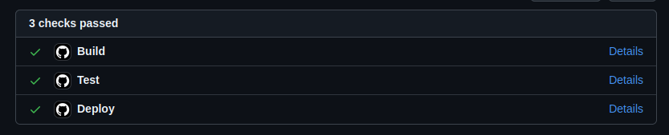
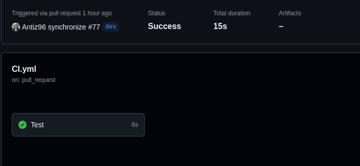
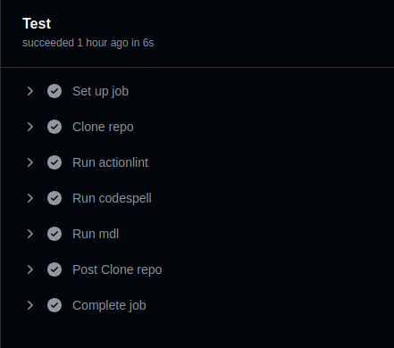
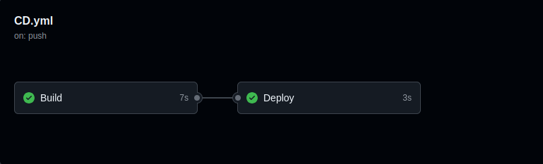
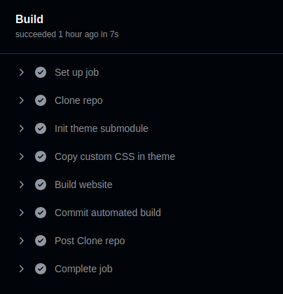
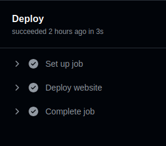
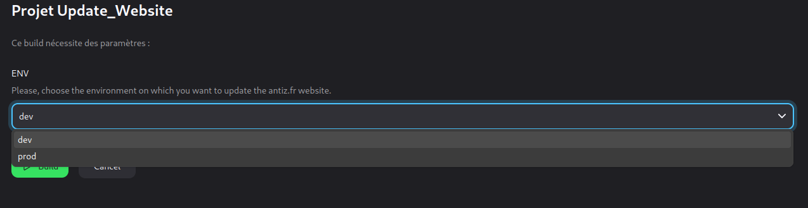

The Automated Workflow I Use to Manage This Website
The website
This website is built with the HUGO static website generator using the anatole theme.
The website’s source code is hosted in this GitHub repository.
Automated CI / CD workflow
Every changes I made (e.g. creating a new article, update the theme, add new parameters to the website, …) are done in my local git repository on the dev branch.
Once the changes are pushed to GitHub, I create a pull request from the dev branch to the main branch, which triggers CI / CD pipelines (running on my own self-hosted runners):

CI
The CI pipeline has one “Test” stage which, as the name implies, runs a bunch of tests (e.g. spellcheckers & linters):


CD
The CD pipeline has two stages:

- The “Build” stage:
The “Build” stage builds the website via hugo and then commits the built changes to my repository (still on the dev branch).

- The “Deploy” stage:
Once the “Build” stage has finished successfully, the “Deploy” stage is triggered.

It allows to automatically deploy the website by remotely triggering the related job on my Jenkins server for my website deployment. This Jenkins job can either target my dev or prod environment (the former being hosted on a virtual server in my homelab, the latter being hosted on a VPS), thanks to a dedicated parameter.

Under the hood, this Jenkins job runs a simple Ansible playbook (see that playbook here) that aims to update the website’s sources on the targeted environment against the related GitHub branch (dev branch –> development environment, main branch –> production environment).
When opening a pull request from the dev branch to the main branch, the “Deploy” stage of my GitHub CD pipeline automatically triggers the related Jenkins job (which itself triggers the related Ansible playbook) targeting my dev environment, so my changes gets automatically deployed and I can review them on my development environment.
Once I reviewed the changes on my development environment and they are ready to go to production, I can just merge the pull request to the main branch which will trigger a new run of the CD pipeline with the “Deploy” stage targeting the prod environment this time!
This workflow may evolve and be improved over time but it’s a good example of a simple; yet effective, flexible and reliable automated CI / CD workflow you can use to manage your projects! 😄